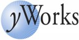
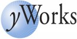

Welcome To The Farrago Project
Farrago is an extensible open-source platform for constructing
enterprise-class RDBMS services. SQL has become the
"intergalactic dataspeak" of the computer world, and Farrago provides
a fast track to creating systems with advanced SQL capabilities.
By itself, Farrago is not an end-user product like MySQL or
PostgreSQL; instead, it provides a standards-based pluggable
architecture, component library, and toolset for developers of other
projects which specialize it. The architecture involves an innovative
hybrid of Java, C++, and UML frameworks. For more information on how
Farrago is being developed, see the Project
Roadmap.
License
Farrago is open-source software licensed under the GNU GPL.
Status
Release 0.9 is now available, and is robust enough to serve as the
basis for LucidDB, which plugs
high-performance data warehousing capabilities into Farrago. A number
of other extension projects are also under development by companies
building on the framework.
The current status page provides details
on the availabily of various framework features.
To browse recent checkins, see
p4web.
Documentation
If you downloaded a binary release, see the README file for
installation instructions.
Downloads and Contributions
The Eigenbase
download page lists the available packages and where to download
them. You can also access the source control system directly as
explained in the getting started docs link above.
You might also want to join the developer mailing
list.
Acknowledgements
The project is hosted at SourceForge under
the auspices of The Eigenbase
Project.
The source code is hosted in
the Eigenbase Perforce
server. A big thanks to
Perforce for providing us with a
free-as-in-beer license. Likewise JIRA for issue
tracking from Atlassian, and yWorks
for nifty class diagrams in Javadoc.
Powered by
 and
and
 and
and
 and

and
